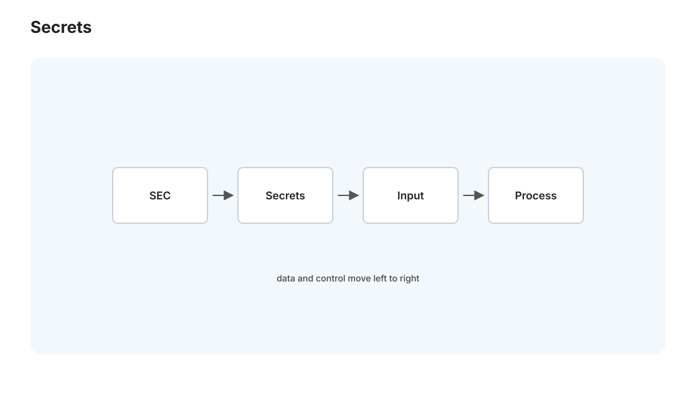
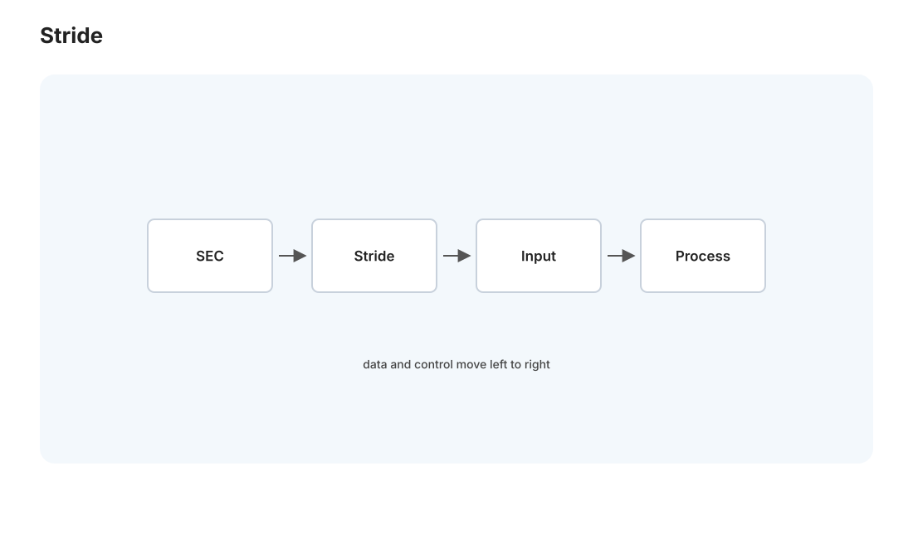
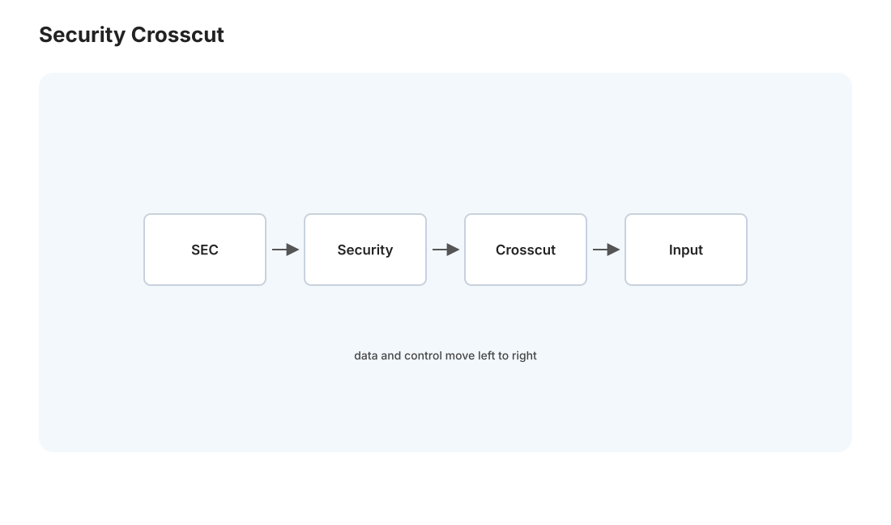

本页目录
安全 II · 密钥、供应链与安全工程
对标：Stanford CS155 / OWASP / Building Secure and Reliable Systems（Google）｜ 前置：sec-01、crypto 线、cloud 线、se 线 sec-01 讲具体漏洞类别，这一页把安全提升到系统性的工程实践——不是"事后修漏洞"，而是"从设计和流程上让系统更难被攻破"。三块：密钥与秘密管理（你 memory 里"明文密钥"的教训直接相关）、软件供应链安全（依赖是最大攻击面之一）、安全工程文化（威胁建模、安全左移、纵深防御）。核心是把安全从个人英雄主义变成可持续的工程纪律。
1. 密钥与秘密管理：最常见的低级灾难

API key、数据库密码、加密密钥、token——这些秘密（secrets）一旦泄露，前面所有防御白搭。而泄露往往因为最低级的错误：
- 绝不硬编码密钥进代码：写死在源码里 → 进了 git 历史 → 永久泄露（git 不删历史 se-01，改了密码旧的还在历史里）。你的 CLAUDE.md 明令"旧 run_rss.bat 含明文密钥勿启用"、memory 里"key 未泄露"的反复确认——正是这条铁律的实践。
- 绝不打进 Docker 镜像（cloud-01）或提交进版本库。
- 正确做法：
- 环境变量 /
.env文件 +.gitignore（你的做法：DeepSeek key 走labs/.env、.env在.gitignore——这是对的）。 - 专用密钥管理：Vault、云的 Secret Manager、K8s Secret（cloud-02）——集中管理、加密存储、审计访问、可轮换。
- 密钥轮换：定期更换、泄露立即撤换（你 memory 里"临时 key 已销毁"就是轮换意识）。
- 最小权限的密钥：只读的用只读 key（你的 tailscale
codex_readonly只读直连——教科书级的最小权限实践）。
扫描防线：用 gitleaks / git-secrets（你 memory 的开源计划里正提到"gitleaks 全史扫"）在提交前/CI（se-02）扫描，防止密钥意外进库。"提交前自动扫密钥"应该是每个项目的默认关卡。
2. 软件供应链安全:你依赖的一切都是攻击面
现代软件是站在依赖的肩膀上——一个项目可能间接依赖上千个第三方包（npm/pip）。每个依赖都是信任 + 攻击面： - 依赖漏洞：你的代码没 bug，但用的库有已知漏洞（如著名的 Log4Shell）→ 你也受影响。 - 恶意包 / 投毒：攻击者发布恶意包（仿冒名、或劫持已有包）→ 你装了就中招。typosquatting（仿冒流行包名字）、依赖混淆是真实攻击。 - 构建链攻击：攻击者攻破 CI/构建工具（se-02）→ 在你不知情下往产物里插后门（SolarWinds 事件）。
防御（供应链卫生）：
- 依赖扫描：npm audit、Dependabot、Snyk——自动发现依赖里的已知漏洞并提示升级（集成进 CI，se-02）。
- 锁定版本 + 校验：lockfile 锁死确切版本 + 哈希（防"同名不同物"，🔗 se-01 内容寻址思想）。
- 最小依赖：别为一个小功能引入一个大依赖——依赖越少攻击面越小（也呼应 se-02 别过度工程、你 IBKR 工具"纯逻辑核心零依赖"的判断）。
- SBOM（软件物料清单）：记录你用了什么依赖——出漏洞时能快速排查"我受影响吗"。
对你的开源计划（memory）：把 Medusa 开源时，"gitleaks 全史扫 + 剥离数据 + 依赖审查"正是供应链 + 密钥卫生的实践——开源前的安全清理，本页给了完整清单。
3. 威胁建模:在设计时想清楚攻击面

安全最有效的时机是设计阶段（越早越便宜——上线后修漏洞成本高百倍）。威胁建模：系统性地问"谁会攻击、攻击什么、怎么防"： - 画数据流 + 信任边界：数据从哪来、经过哪些组件、哪里是"不可信 → 可信"的跨越（那里必须校验，🔗 web-02 边界校验、sec-01 不信任输入）。 - STRIDE 框架：逐类想威胁——Spoofing（伪造身份）、Tampering（篡改）、Repudiation（抵赖）、Information disclosure（信息泄露）、Denial of service（拒绝服务）、Elevation of privilege（提权）。 - 对每个威胁定对策：认证防伪造、完整性校验防篡改、日志防抵赖、加密防泄露……
方法论：威胁建模不用很正式——哪怕设计时花十分钟问"这里的输入可信吗？这个密钥怎么保护？出错会泄露什么？"就能挡下大量问题。
4. 安全工程文化:让安全可持续
安全不是一个人的英雄主义或一次性审计，是融入流程的持续实践：
- 安全左移（shift left）：把安全检查提前到开发早期——IDE 里的安全 lint、CI 里的密钥扫描 + 依赖扫描 + SAST（静态应用安全测试，🔗 se-02、toc-01 Rice 定理的保守近似）。越早发现越便宜。
- 纵深防御：不指望单点——输入校验 + 参数化查询 + 最小权限 + 网络隔离 + 监控告警层层叠加，一层破了还有下一层。
- 最小权限，处处适用：数据库账号只给需要的权限（你的只读账号）、服务只开必要端口、容器 non-root（cloud-01）。
- 假设会被攻破 + 可观测：不假设"绝对安全"，而是能快速发现和响应（🔗 cloud-02 可观测性、监控异常访问）——检测到入侵比假装不会被入侵更现实。
- 安全与可用性平衡：过度安全（处处摩擦）会让人绕过它——好的安全是让"安全的做法"成为"最容易的做法"（如密钥管理工具比手动传密钥还方便）。
读法：成熟的安全工程 = 把 sec 线的所有知识变成默认的、自动的、低摩擦的流程——密钥自动扫描、依赖自动审计、输入默认校验、权限默认最小、异常默认告警。安全不是产品发布前的一道关，是贯穿设计-开发-部署-运维的一条线。
5. 全站收束:安全是所有层的横切关注

安全线不是孤立的——它横切本站每一层，把整个课程串起来： - 系统层：内存安全（csapp/rust）、进程隔离（os）、容器隔离（cloud）。 - 网络层：TLS 加密（net/crypto）、认证。 - 数据层：SQL 注入防御（db）、加密存储、最小权限账号。 - 应用层：输入校验（web-02）、XSS/CSRF 防御（web-03）、授权检查。 - 流程层：密钥管理、供应链、CI 安全扫描（se）、威胁建模。
"安全是每一层都要考虑的横切属性，不是某一层的功能"——这是安全工程最重要的心智模型，也是本站六大板块在安全这一页的会师。对你的 Medusa 和开源计划：从只读账号、.env + gitleaks、到未来的依赖扫描和健康告警，你其实已经在实践本页的很多原则——本站帮你把这些零散的好习惯，连成一个系统性的安全工程框架。
6. 练习与要点
例 1（密钥审计） 检查 Medusa 的密钥都存哪（.env?、有没有历史泄露、只读账号权限对不对），对照本页清单做一次密钥卫生自查——把"明文密钥"的历史教训变成主动防御。
例 2（供应链自查） 对一个项目跑 npm audit / pip-audit，看有几个已知漏洞依赖——理解"你依赖的一切都是攻击面"，为开源计划的依赖审查热身。
例 3（威胁建模练手） 给 Medusa 的公网入口（cloudflared → FastAPI）做一次迷你 STRIDE：谁能攻击、攻击什么、现有防御够吗——把威胁建模用到自己系统的真实攻击面。\(\blacksquare\)
计算机讲义库到此全部完成——六大板块、二十门课、五十页，从算法理论到全栈工程再到安全，计算机科学的主干你都走了一遍。祝学习顺利，常回来查表。